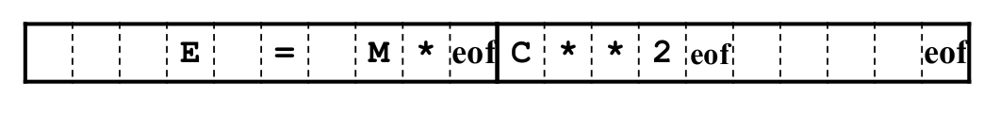

Lexical Analysis
1 | if (b == 0) a = b; |
| lexeme | if | ( | b | == | 0 | ) | a | = | b | ; |
|---|---|---|---|---|---|---|---|---|---|---|
| token | KWif | ( | ID | == | NUM | ) | ID | = | ID | SEMI |
- Transform multi-character input stream to token stream
- Reduce length of program representation (remove spaces)
Tokens, Patterns and Lexemes
- Tokens
- Token is a sequence of characters that can be treated as a single logical entity.
- e.g. identifier, keyword, operator
- Patterns
- A set of strings in the input for which the same token is produced as output. (regular expression)
- e.g. [A−Za−z_]
- Lexemes (詞位)
- A lexeme is a sequence of characters in the source program that is matched by the pattern for a token.
- e.g. x, y; if, else
Input Buffering
Sometimes lexical analyzer needs to look ahead some symbols to decide about the token to return.
1 | -, =, < could also beginning of a two-character operator like ->, ==, <- |
Buffer pairs
Use two-buffer scheme to handle large lookaheads safely.

- a buffer divided into two N-character halves (e.g. N = 1024)
- read N chars into buffer with system read command (v.s. using one system call per character)
- if fewer than N chars, than marks eof at the end of the source file
- Two-pointers
- lexemeBegin : marks the begining of the current lexeme
- forward : scans ahead until a pattern match is found
lexeme 找到後 lexemeBegin 移至剛剛找到的 lexeme 後方的字元，forward 移至其右端
Sentinels (哨兵)
Without sentinel, we need two tests for out-of-bound for every forward
- one for the end of the buffer
- one to determine what character is read
We can combine the buffer-end test with the test for the current character if we extend each buffer to hold a sentinel character at the end (eof).

Comparison
Input buffering with buffer pairs:
1 | // 1. Check the end of the buffer |
Input buffering with sentinels:
1 | forward += 1 |
Visualized detail: https://www.slideshare.net/dattatraygandhmal/input-buffering
Regular Expressions
Use regular expressions (REs) to describe programming language tokens
Language
A regular expression R describes a set of strings of characters denoted L(R), also called a regular set
| Regular Expression, R | Strings in L(R) |
|---|---|
| a | “a” |
| ab | “ab” |
| a|b | “a”, “b” |
| (ab)* | “”, “ab”, “abab”, … |
| (a|ε)b | “ab”, “b” |
Suppose r and s are RE denoting L(r) and L(s)
- (r) is a RE denoting L(r)
- (r)|(s) is a RE denoting L(r)∪L(s)
- (r)(s) is a RE denoting L(r)L(s)
- (r) is a RE denoting (L(r))
Algebraic Laws for REs
| LAW | DESCRIPTION |
|---|---|
| r|s = s|r | | is commutative |
| r|(s|t) = (r|s)|t | | is associative |
| r(st) = (rs)t | concatenation is associative |
| r(s|t) = rs|rt; (s|t)r = sr|tr | concatenation distributes over | |
| εr = rε = r | ε is the identity for concatenation |
| r* = (r|ε) | ε is contained in * |
| r** = r | * is idempotent (冪等) |
Extensions of REs
| REs | DESCRIPTION | ALIAS |
|---|---|---|
| R+ | one or more strings of R | R(R*) |
| R? | optional R | R|ε |
| [abcd] | one of listed characters | (a|b|c|d) |
| [a-z] | one character from this range | (a|b|c|d…|z) |
| [^ab] | anything but one of the listed chars | |
| [^a-z] | one character not from this range |
Regular Definitions
give names to regular expressions
1 | name -> regular expression |
1 | e.g. digit = [0-9], posint = digit+ |
Restrictions on REs
Regular expressions are not capable of describing most complete languages.
They describe languages composed of sets of strings of the form :
They cannot describe:
- Balanced nesting constructs
- e.g. if … then … else …
- Repetition of the same string
- e.g. {wcw | w is a string of a’s and b’s}
- Constructs where the number of repetitions is fixed by the value of a part of the string
- e.g. nHa1a2 …an
Anything that needs to “memorize” “non-constant” amount of information happened in the past cannot be recognized by regular expressions
Chomsky Hierarchy
- Unrestricted languages (type 0)
- Turing machines
- Context-sensitive languages (type 1)
- Linear bounded automata
- Context-free languages (type 2)
- Pushdown automata
- Regular languages (type 3)
- Finite automata
Interaction between Scanner & Parser

Attributes of Tokens
| Lexemes | Token Name | Attribute Value |
|---|---|---|
| if | if | - |
| then | then | - |
| else | else | - |
| id | id | Pointer to table entry |
| number | number | Pointer to table entry (or the value of the number) |
| < | relop | LT |
| <= | relop | LE |
| = | relop | EQ |
| <> | relop | NE |
| > | relop | GT |
| >= | relop | GE |
Implementation of Lexical Analysis
Use Transition Diagram
Recognizes reserved words
problem: keyword maybe recognize as an identifier
Two solutions:
- Install the reserved words in the symbol table initially
- installID() : place identifier in the symbol table if it is not already there, and return a pointer to the symbol-table entry for the lexeme found
- getToken() : return token name (either id or one of the keyword tokens that was initially installed in the table)
- Create separate transition diagrams for each keyword

Finite Automata
Recognizers which simply say “yes” or “no” about each possible input string

Definition
Epsilon Moves
Machine can move from state A to state B without reading input

Nondeterministic Finite Automata (NFA)

- Can have multiple transitions for one input in a given state
- Can have ε-moves
Deterministic Finite Automata (DFA)
- One transition per input per state
- No ε-moves
NFA vs DFA
- DFA
- Action on each input is fully determined
- Easier to implement
- NFA
- May have choices at each step
- Accepts string if there is ANY path to an accepting state
- More complex in implementation
- May need to backtrack
- May end up exploring all the paths in the NFA
Transition Table
| State | a | b | ε |
|---|---|---|---|
| 0 | {0, 1} | {0} | ∅ |
| 1 | ∅ | {2} | ∅ |
| 2 | ∅ | {3} | ∅ |
| 3 | ∅ | ∅ | ∅ |
- Columns are input symbols
- Rows are current states
- Entries are resulting states
- Pros and Cons
- Pro
- easily find the transitions
- Con
- take lots of space
- Pro
RE to Automata
Thompson’s construction
Suppose N(s) and N(t) are NFA’s for RE s and t
- r = s|t

- r = st

- r = s*
- Precedence of Operators
- Kleene closure (*), ?, +
- concatenation
- alternation
- All operators are left associative
Subset Construction
- remove ε-transitions to get a DFA
Operations on NFA States
- ε-closure(s)
- s 可以透過 ε-transition 到達的 NFA state 的 set
- ε-closure(T)
- 在 set T 裡面的 NFA state s 可以透過 ε-transition 到達的 NFA state 的 set
- move(T, a)
- 在 set T 裡面的 NFA state s 可以透過 input symbol a 到達的 NFA state 的 set
Converting NFA to DFA
- Construct the initial state of the DFA
- finding ε-closure(s0)
- From a state T in the DFA, for each input character a
- finding ε-closure( move(T, a) ), say U
- make U a state in DFA if it is not there yet
- if U contains at least one final state in NFA, then mark it as a final state in DFA
- make T x a -> U a transition in DFA
- Repeat the step above for all states in DFA that has not been processed yet
Minimized DFA
同個 language 可以用不同的 DFA 來表示，所以我們可以找到最少 state 的 DFA 來優化從 NFA 轉過來的 DFA。
key principle : merge 有相同行為的 state
- final states 與 non-final states 不可 merge
- 對所有 x 從 state s 到 t，若所有 acceptance decision 相同，則 s 與 t 有相同的行為
流程：
- 初始化
- 將 final state 與 non-final state 區格開
- 區分不同的群組 G
- 對所有 input symbol a，在 G 中的兩個 state s 與 t 可以通過 a 轉到相同的群組，則 s 與 t 屬於同一個群組
- 除此之外，將 s 與 t 放至不同群組中
- 重複直到群組不再變化
例子：

Final-state: {E}
Non-final-state: {A, B, C, D}
- Try to split {A,B,C,D}
- for input a
- A,B,C,D all go to {A,B,C,D} on a
- for input b
- A,B,C go to {A,B,C,D} on b
- D goes to {E} on b
- {A,B,C,D} → {A,B,C},{D},{E}
- for input a
- Try to split {A,B,C}
- for input a
- A,B,C all go to {A,B,C} on a
- for input b
- A,C go to {A,B,C} on b
- B goes to {D} on b
- {A,B,C},{D},{E} → {A,C},{B},{D},{E}
- for input a
- A,C go to the same states on each input

Implementation of Lexical Analyzer Generator

Ambiguity Resolution
Longest match
- match 最長的 pattern
- 在 accept 前需要 lookahead

First match
- conflict 時選最先列出的 rule
Lookahead
有些情形 longest match 和 first match 無法處理
e.g. In fortran:
treat IF a keyword: IF (a = b) THEN …
treat IF a identifier: IF (I, J) = 3 …
1 | IF / \( .* \) letter {return IF} |
/ 後方可以 match additional pattern 但是不 match lexeme，所以下次的 match 是從 ( 開始，而不是 letter 後方
Lexical Analyzer Generator: Lex

當 RE 能有多個 match 情形時，考慮：
- Longest matching token
- Token specification order